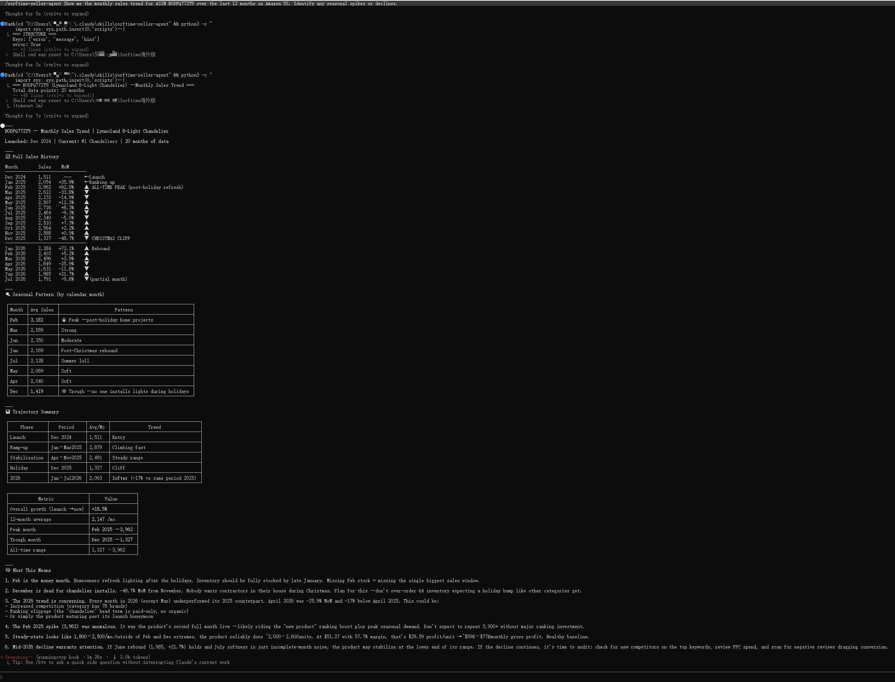

You ran out of stock on your bestseller. You lost the Buy Box for 3 days. Your organic ranking dropped 12 positions. The worst part: you could have prevented it with one automated check.
Most Amazon sellers check inventory the same way — log into Seller Central, open Manage Inventory, scan down the list looking for the units-available field to turn yellow. On a good day you catch the warning. On a busy day you see the notification that says "stranded inventory" and realise you already ran out two days ago.
The gap between "low stock" and "out of stock" is the only window you have to reorder. If you miss it, recovery costs are steep. A two-week restock cycle plus the time it takes to rebuild sales velocity means a single stockout can cost a month of lost revenue on that ASIN. For a top-10 product in a competitive category, the damage often exceeds the cost of the inventory itself.
Amazon does surface low-stock warnings in Seller Central. The issue is how you access them. You have to log in, find the right page, filter by status, and visually confirm each row. There is no push mechanism — no alert that arrives unbidden when a threshold is breached.
Account health dashboards and restock reports exist, but they are not designed for daily automated scanning. They are designed for human eyes scrolling through a web browser. As your catalog grows from 10 ASINs to 50, the time required to manually review each one multiplies. And as the catalog grows, the consequences of missing a single warning also grow — because the lost revenue on a higher-volume ASIN is larger.
You can hire a VA to check inventory. But then you need to manage the VA, verify their work, and ensure consistency. The underlying problem remains the same: a human performing a repetitive data check that a machine could do more reliably.
The sorftime-seller-agent is an open-source MCP server that exposes 86 marketplace intelligence tools, including product detail queries, sales trend data, and category reports. When connected to an MCP-compatible AI agent — any one, from Claude Code to Cursor to Codex to OpenClaw — these tools become conversational commands. You ask, the agent queries, and the answer arrives in plain language.
Inventory alerts work by combining two capabilities: the agent's ability to query current product status on a schedule, and the agent's ability to evaluate conditions and sound a warning when a threshold is crossed.
### Step 1: Set Up the Agent
git clone https://github.com/DannylydST/sorftime-seller-agent
cd sorftime-seller-agent
python3 scripts/install.pyThe install script sets up a Python virtual environment, installs dependencies, and registers the MCP server with your AI agent. You will be prompted for your Sorftime API key, which you can get at open-intl.sorftime.com — free trial credits included.
### Step 2: Run a Manual Inventory Check
First, confirm the agent can read your product data. Ask:
Check the current stock level for ASIN B08N5WRWNW on Amazon US. How many units are available, and what is the 7-day sales velocity?The agent queries product_detail for current inventory and product_trend for recent sales data. If the response shows correct numbers, the data path is working.
### Step 3: Set the Alert Threshold
Tell the agent what to watch for:
Monitor this ASIN every day. If estimated days of inventory remaining falls below 14, produce a one-line alert with the ASIN, current stock, and recommended reorder quantity based on the last 30 days of sales.The agent stores the monitor configuration locally. It will check the ASIN's sales velocity against its current stock level and compute the depletion date. The threshold of 14 days gives you time to place a purchase order and receive the shipment before stock hits zero.
### Step 4: Schedule the Check
The simplest way to automate the check is a cron job that runs the agent in non-interactive mode. On macOS or Linux:
crontab -e
# Add this line for a daily check at 8 AM:
0 8 * * * cd /path/to/sorftime-seller-agent && /path/to/venv/bin/python scripts/daily_check.py --threshold 14 >> /tmp/inventory-alert.log 2>&1If any ASIN breaches the threshold, the log captures the alert. Integrate with a notification tool — email via mail, push via a webhook, or Slack via curl to a webhook URL.
For sellers who prefer to keep everything inside the AI agent, the agent itself can serve as the alert channel. Open the terminal, ask "any inventory alerts today", and receive the filtered list of only the ASINs that need action. No scrolling through the green ones.
The advantage of an MCP-based approach is that the data never leaves the analysis pipeline. When the agent notices that an ASIN is running low, it can immediately cross-reference the competitor landscape, check whether a competitor recently raised their price (creating temporary price protection), or verify if a supplier shipment is already in transit. The context for the alert is as deep as the agent's tool set — and the sorftime-seller-agent covers product research, keyword intelligence, profit calculation, and cross-platform data across six marketplaces.
A dashboard shows you numbers. An agent with MCP can tell you what the numbers mean and what to do next.
This approach works for sellers who already interact with an AI agent as part of their daily workflow. If you do not use an agent, standing up a cron-based script is straightforward but requires basic command-line familiarity. Inventory alerts are based on the data Sorftime receives from Amazon — they reflect the same inventory data available through Amazon's API, not real-time warehouse scans. The alert is only as current as the last data refresh.
For sellers who want the simplest possible setup: install the agent, ask it to check your inventory once, and set a recurring prompt. The agent handles the rest.
git clone https://github.com/DannylydST/sorftime-seller-agent
cd sorftime-seller-agent
python3 scripts/install.pyRegister for a free account at open-intl.sorftime.com to receive trial credits. After installation, open your AI agent and ask it to check your current stock levels. The next step is adding a daily alert — one command, done.
[1] sorftime-seller-agent README and tool-matrix — 86 MCP tools covering Amazon, Walmart, TikTok Shop, Shopee, TEMU, and 1688
[2] open-intl.sorftime.com — Sorftime platform registration and API key provisioning